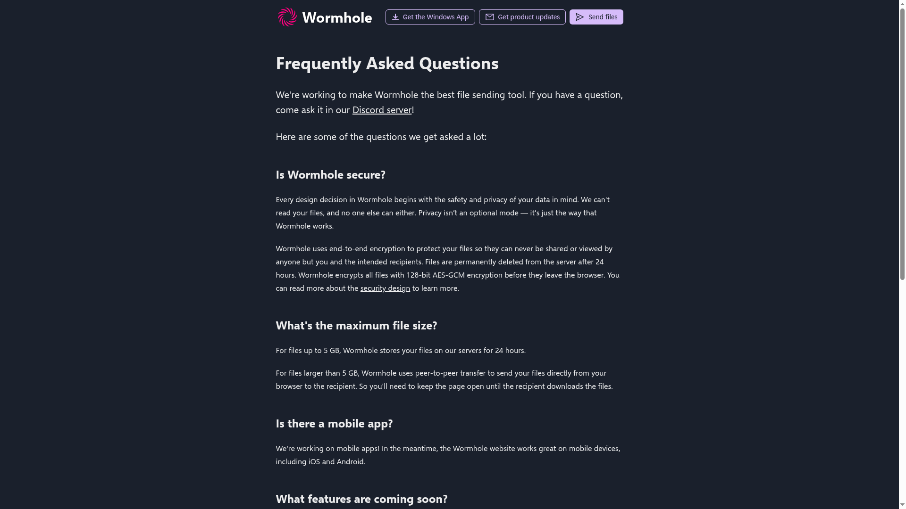
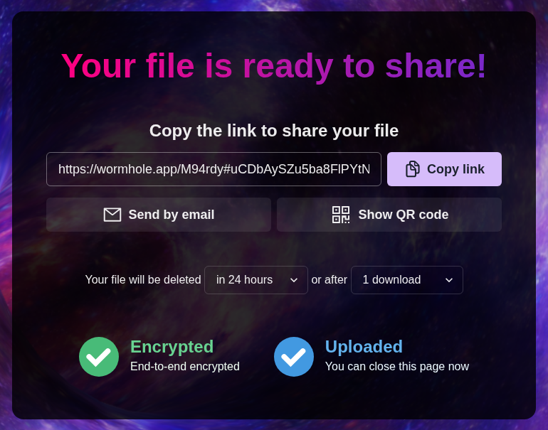
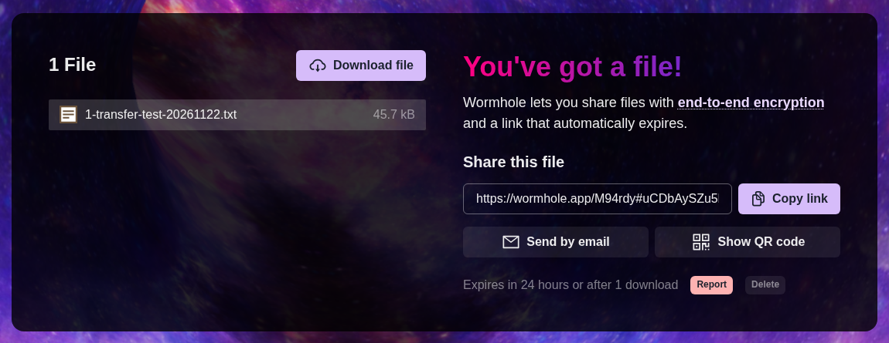
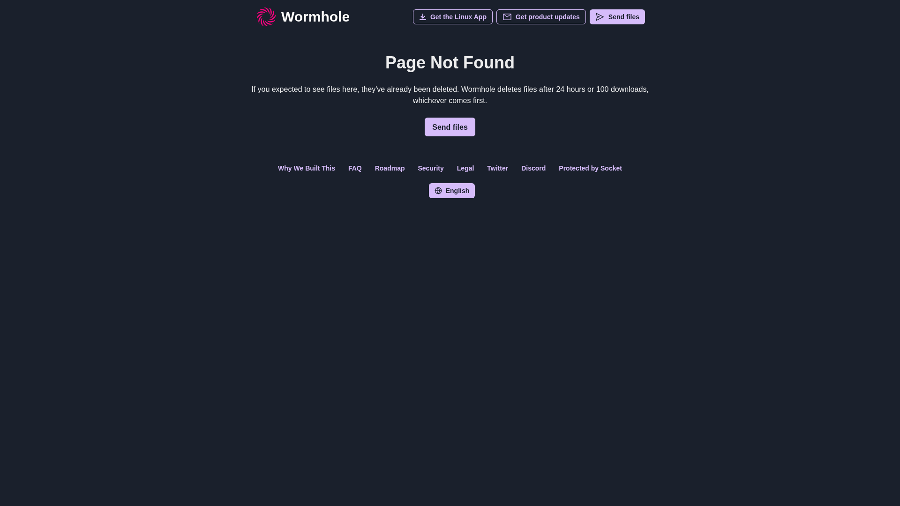

Everyday file sharing · Temporary links
Wormhole: temporary file links, with a sender-offline test
Need to send an existing file without keeping a shared folder forever? Wormhole creates a temporary download link. Our small test still worked after the sender browser had closed, and the received bytes matched the original.
What is the useful difference?
This is a file handoff, not a tool that rewrites or summarises your document. Select the existing file, finish the upload and share its retrieval link. It can suit ordinary notes, a permitted photo or a non-confidential document that someone needs later.
AiCoN has already covered PairDrop for a live browser-to-browser handoff. The useful difference here is temporary server-backed availability for smaller files: our receiver opened the link after the sender had closed. You do not need to arrange for both people to remain on the page at the same time for that tested case.
This is not permanent cloud storage or a backup. Keep the original until the recipient confirms they have the right file.
Understand 10 GB versus 5 GB
The homepage advertises sending up to 10 GB. The operator's FAQ makes an important distinction: for files up to 5 GB, it says a server copy is available for up to 24 hours; above 5 GB, it describes peer-to-peer transfer, with the sender required to keep the page open until the recipient finishes.
These are provider limits, not sizes we successfully tested. Our sample was only 45,673 bytes, about 45.7 kB. Do not read our sender-offline result as proof that a 10 GB transfer can continue with the sender closed.
No account, card or payment was requested in our small sending and receiving test. We did not verify a paid plan or a guarantee about future pricing. Uploading and downloading still use internet data; the terms make users responsible for their carrier charges.

How to send a small trial file
Open the website and select a harmless file
Use Select files to send. Start with a non-sensitive sample rather than an identity document, password file, medical record or confidential work attachment. Only share files you have permission to distribute.
Wait for the upload to finish
The link appears before the upload finishes. That is not the same as a completed server copy. For our small-file test, we waited until the interface displayed Uploaded and You can close this page now. Only then did we close the sender browser.
For files above the FAQ's server-storage threshold, keep the sender open for the recipient's transfer instead. A failed or interrupted upload needs checking; merely copying a link proves nothing about completion.
Choose an expiry and download allowance
Our screen defaulted to 24 hours and 100 downloads. Its time menu also offered 60 minutes, 2, 6 and 12 hours. The download menu offered 1, 5, 10, 20, 50 and 100. We changed only the download allowance to 1 download.
Choose for the real audience. A one-download link is not suitable for a whole class or family group. It can also be consumed by someone other than the intended recipient if you send it to the wrong person. We did not test every setting or a time-based expiry.
Copy the complete link and share it carefully
Do not cut off the
#fragment. Send through a channel appropriate for the file's sensitivity and confirm the recipient. The site also offers email and QR controls, but we did not test either delivery route or send any real message.

What the recipient does
Open the complete link, check the displayed file and choose Download file. Check the received contents before deleting the original or forwarding the link. A familiar service domain does not make an unexpected attachment safe; do not download unknown files just because the service encrypts transfers.
Our fresh receiver showed the sample and its 45.7 kB size. We started the normal download and checked the decrypted download response. It contained exactly 45,673 bytes, with the same SHA-256 as the source. This establishes the bytes received in our sample, not every browser's Save As dialog or where a phone stores downloads.

What happened to the one-download link?
After the retrieval, we opened the same link in a new tab. It returned Page Not Found. The earlier receiver later reported that the file had expired. That is our observed availability check for this one record.
The unavailable page uses a generic explanation mentioning 24 hours or 100 downloads, even though our selected allowance was one. Do not treat that generic text as a record of your chosen setting. We did not wait 24 hours, inspect server deletion or establish forensic erasure. Existing recipient copies remain outside the link's control.

Encryption is not a blanket privacy promise
Wormhole says it encrypts files in the browser using AES-GCM and places the decryption key in the link fragment. MDN confirms that a fragment is not sent in the initial request for a web resource. The complete link still gives its holder the capability to open the file while it is available.
We did not audit the implementation, network paths, logging, retention or the operator's no-tracker claims. Its legal notice describes operational technical information, service providers and processing in the United States and other countries. No-login does not mean no technical data is handled.
For private school, employer or client material, follow the organisation's approved sharing rules instead of assuming any browser tool is acceptable. The terms set a minimum age of 13 and note that a higher local age may apply without parental approval. Use a harmless file for your first trial.
Exactly what we tested
- One 45,673-byte fictional text file, with no personal information.
- Upload completion, then closing the entire sender browser before opening a fresh receiver.
- The receiver's decrypted download bytes and a matching SHA-256.
- A one-download setting, followed by an unavailable link in a new tab.
Outside this check: large files, folders, archives, multiple files, physical phones, cross-device or India-carrier availability, time-based expiry, QR scanning, real email or messaging delivery, password protection, native apps or independent security guarantees. A 390px check of the already-expired page is not a mobile-transfer test.
The test is deliberately small. Use it as evidence that this particular workflow worked, not as a promise about speed, maximum capacity or every browser.
Sources
- Wormhole public app · Operator product and functional test.
- Wormhole FAQ · Operator documentation.
- Security design · Operator technical documentation.
- Terms and privacy policy · Operator legal notice.
- URI fragment · Independent web-platform documentation.
- Wormhole file-transfer explainer · Independent editorial.
Independent AiCoN explainer. This is a fresh functional check of an existing service, not a new-launch announcement or a security certification. Checked 22 November 2026.